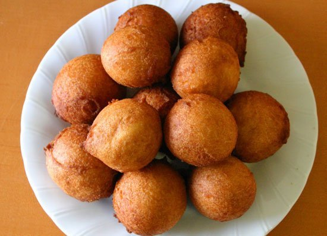

Samoan Pancakes Recipe
My brothers and I used to eat this when we were younger. They're a lot like
doughnuts but with the added fun of topping them with your favorite
toppings.After a while of not having these, I started making them on my
own for my family, and I enjoy them as much today as I did back then!

Ingredients
- 3 ½ cups all-purpose flour
- 1 ⅓ cups white sugar
- 2 teaspoons baking powder
- 2 very ripe bananas, mashed
- 1 tablespoon vanilla extract
- 1 ½ cups water
- 6 cups vegetable oil for frying
Steps
- Combine the flour, sugar, and baking powder in a bowl until
thoroughly mixed, and stir in the bananas, vanilla extract, and water
to make a smooth, sticky dough.
- Heat oil in a deep-fryer or large saucepan to 350 degrees F (175
degrees C). The oil should be deep enough to completely cover the
panikekes while frying, or at last 3 inches deep.
- Scoop up a scant 1/4 cup of batter with a large spoon, and use
another spoon to push it off into the oil. Fry in small batches of 4 or
5 until they float to the top and turn golden brown, about 3 minutes
, then flip them to fry the other side. Remove from the fryer and let
drain on paper towels.